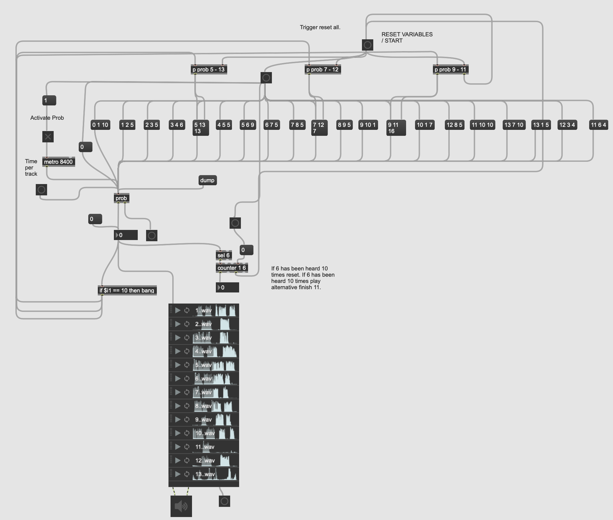

About the Town
Placing the listener as the silent witness to one half of a kerbside conversation, About the Town attempts to explore
the inscrutability of colloquial language within a narrative framework which gradually dissolves and reconstitutes itself.
An audio render from Max/Msp has been included below, as well as a link to the Max patch at the bottom of this page.
The work comprises of an original text, written and spoken in a Newry and Southern Irish Border dialect.
The audio was recorded in stereo using a binaural-head microphone and as such the work was presented
with headphones.
Running from a Max/Msp patch, the changes in the narrative are caused by a set of Markov chains
being
operated in conjunction with a counter system, which is intended to increase the level of
disruption to the
story over time, before decreasing it again. Below the image of the patch,
is a link to the Max/Msp project itself, including all media.

"Download Max patch here."